Puertas Lógicas
- Construir la función NOT
- Construir la función buffer
- Construir la función AND
- Construir la función NAND
- Construir la función OR
- Construir la función NOR
Señales digitales y puertas lógicas
Si bien el sistema de numeración binaria es una abstracción matemática interesante, todavía no hemos visto su aplicación práctica a la electrónica. Este capítulo está dedicado precisamente a eso: aplicar de forma práctica el concepto de bits binarios a los circuitos. Lo que hace que la numeración binaria sea tan importante para la aplicación de la electrónica digital es la facilidad con la que los bits pueden representarse en términos físicos. Debido a que un bit binario sólo puede tener uno de dos valores diferentes, 0 o 1, se puede utilizar cualquier medio físico capaz de cambiar entre dos estados saturados para representar un bit. En consecuencia, cualquier sistema físico capaz de representar bits binarios es capaz de representar cantidades numéricas y potencialmente tiene la capacidad de manipular esos números. Este es el concepto básico que subyace a la informática digital.
Los circuitos electrónicos son sistemas físicos que se prestan bien a la representación de números binarios. Los transistores, cuando funcionan en sus límites de polarización, pueden estar en uno de dos estados diferentes: corte (sin corriente controlada) o saturación (corriente máxima controlada). Si un circuito de transistores está diseñado para maximizar la probabilidad de caer en cualquiera de estos estados (y no operar en forma lineal oactivo, modo), puede servir como una representación física de un bit binario. Una señal de voltaje medida en la salida de dicho circuito también puede servir como representación de un solo bit, un voltaje bajo representa un "0" binario y un voltaje (relativamente) alto representa un "1" binario. Tenga en cuenta el siguiente circuito de transistores:
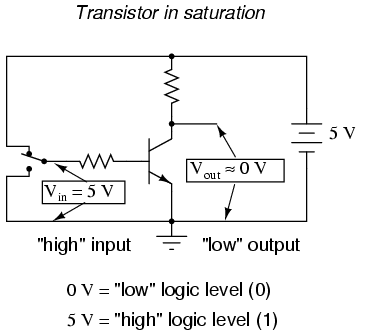
En este circuito, el transistor está en estado de saturación en virtud del voltaje de entrada aplicado (5 voltios) a través del interruptor de dos posiciones. Debido a que está saturado, el transistor deja caer muy poco voltaje entre el colector y el emisor, lo que resulta en un voltaje de salida de (prácticamente) 0 voltios. Si usáramos este circuito para representar bits binarios, diríamos que la señal de entrada es un "1" binario y que la señal de salida es un "0" binario. Cualquier voltaje cercano al voltaje de suministro total (medido en referencia a tierra, por supuesto) se considera un "1" y la falta de voltaje se considera un "0". Los términos alternativos para estos niveles de voltaje sonalto(igual que un "1" binario) ylow(igual que un "0" binario). Un término general para la representación de un bit binario mediante un voltaje de circuito esnivel lógico.
Moviendo el interruptor a la otra posición, aplicamos un "0" binario a la entrada y recibimos un "1" binario en la salida:
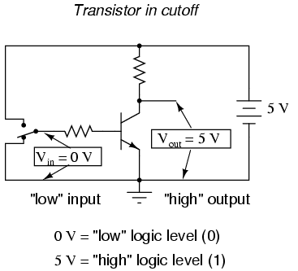
Lo que hemos creado aquí con un solo transistor es un circuito generalmente conocido comopuerta lógica, o simplementepuerta. Una puerta es un tipo especial de circuito amplificador diseñado para aceptar y generar señales de voltaje correspondientes a unos y ceros binarios. Como tales, las puertas no están diseñadas para amplificar señales analógicas (señales de voltajeentre 0 y full voltage). Usadas conjuntamente, múltiples puertas pueden aplicarse a la tarea de almacenamiento de números binarios (circuitos de memoria) o manipulación (circuitos de cómputo), donde la salida de cada puerta representa un bit de un número binario de varios bits. Cómo se logra esto es tema de un capítulo posterior. Por ahora es importante centrarse en el funcionamiento de las puertas individuales.
La puerta que se muestra aquí con un solo transistor se conoce comoinversor, o NO puerta, porque emite exactamente la señal digital opuesta a la de entrada. Por conveniencia, los circuitos de compuerta generalmente se representan con sus propios símbolos en lugar de con los transistores y resistencias que los constituyen. El siguiente es el símbolo de un inversor:
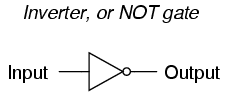
A continuación se muestra un símbolo alternativo para un inversor:
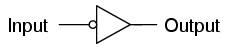
Observe la forma triangular del símbolo de la puerta, muy parecida a la de un amplificador operacional. Como se mencionó anteriormente, los circuitos de compuerta en realidad son amplificadores. El pequeño círculo o "burbuja" que se muestra en el terminal de entrada o de salida es estándar para representar la función de inversión. Como se puede sospechar, si quitáramos la burbuja del símbolo de la puerta, dejando solo un triángulo, el símbolo resultante ya no indicaría inversión, sino simplemente amplificación directa. Tal símbolo y tal puerta realmente existen, y se llamabuffer, el tema de la siguiente sección.
Como el símbolo de un amplificador operacional, las conexiones de entrada y salida se muestran como cables individuales, siendo el punto de referencia implícito para cada señal de voltaje "tierra". En los circuitos de puerta digital, tierra es casi siempre la conexión negativa de una única fuente de voltaje (fuente de alimentación). Las fuentes de alimentación duales o "divididas" rara vez se utilizan en los circuitos de puerta. Debido a que los circuitos de compuerta son amplificadores, requieren una fuente de energía para funcionar. Al igual que los amplificadores operacionales, las conexiones de alimentación para puertas digitales a menudo se omiten en el símbolo por razones de simplicidad. Si tuviéramos que mostraralllas conexiones necesarias para operar esta puerta, el esquema se vería así:
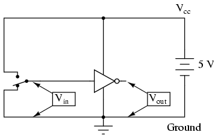
Los conductores de suministro de energía rara vez se muestran en los esquemas del circuito de la puerta, incluso si las conexiones de suministro de energía en cada puerta sí lo son. Minimizando líneas en nuestro esquema, obtenemos esto:
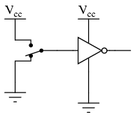
"Vcc" representa el voltaje constante suministrado al colector de un circuito de transistor de unión bipolar, en referencia a tierra. Aquellos puntos en un circuito de compuerta marcados por la etiqueta "Vcc" están todos conectados al mismo punto, y ese punto es el terminal positivo de una fuente de voltaje CC, generalmente de 5 voltios.
Como veremos en otras secciones de este capítulo, existen bastantes tipos diferentes de puertas lógicas, la mayoría de las cuales tienen múltiples terminales de entrada para aceptar más de una señal. La salida de cualquier puerta depende del estado de sus entradas y de su función lógica.
Una forma común de expresar la función particular de un circuito de compuerta se llamatabla de verdad. Las tablas de verdad muestran todas las combinaciones de condiciones de entrada en términos de estados de nivel lógico (ya sea "alto" o "bajo", "1" o "0" para cada terminal de entrada de la puerta), junto con el nivel lógico de salida correspondiente, ya sea "alto" o "bajo". Para el circuito inversor, o NO, que se acaba de ilustrar, la tabla de verdad es muy simple:
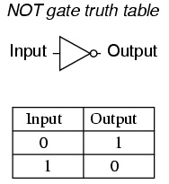
Las tablas de verdad para puertas más complejas son, por supuesto, más grandes que la que se muestra para la puerta NOT. La tabla de verdad de una puerta debe tener tantas filas como posibilidades haya de combinaciones de entradas únicas. Para una puerta de una sola entrada como la puerta NOT, sólo hay dos posibilidades, 0 y 1. Para una puerta de dos entradas, haycuatroposibilidades (00, 01, 10 y 11) y, por tanto, cuatro filas de la tabla de verdad correspondiente. Para una puerta de tres entradas, hayochoposibilidades (000, 001, 010, 011, 100, 101, 110 y 111), por lo que se necesita una tabla de verdad con ocho filas. Los amantes de las matemáticas se darán cuenta de que el número de filas de la tabla de verdad necesarias para una puerta es igual a 2 elevado a la potencia del número de terminales de entrada.
- REVISAR:
- En los circuitos digitales, los valores de bits binarios de 0 y 1 están representados por señales de voltaje medidas en referencia a un punto común del circuito llamadosuelo. La ausencia de voltaje representa un "0" binario y la presencia de voltaje de suministro de CC total representa un "1" binario.
- A puerta lógica, o simplementepuerta, es una forma especial de circuito amplificador diseñado para entrada y salidanivel lógicovoltajes (voltajes destinados a representar bits binarios). Los circuitos de puerta se representan más comúnmente en un esquema mediante sus propios símbolos únicos en lugar de mediante los transistores y resistencias que los constituyen.
- Al igual que con los amplificadores operacionales, las conexiones de alimentación a las puertas a menudo se omiten en los diagramas esquemáticos en aras de la simplicidad.
- A tabla de verdades una forma estándar de representar las relaciones de entrada/salida de un circuito de puerta, enumerando todas las posibles combinaciones de niveles lógicos de entrada con sus respectivos niveles lógicos de salida.
La puerta NOT
El circuito inversor de un solo transistor ilustrado anteriormente es en realidad demasiado tosco para ser de uso práctico como puerta. Los circuitos inversores reales contienen más de un transistor para maximizar la ganancia de voltaje (para garantizar que el transistor de salida final esté en corte total o en saturación total) y otros componentes diseñados para reducir la posibilidad de daños accidentales.
Aquí se muestra un diagrama esquemático de un circuito inversor real, completo con todos los componentes necesarios para un funcionamiento eficiente y confiable:
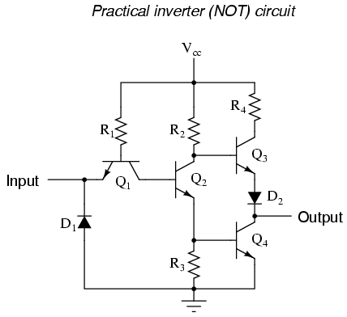
Este circuito está compuesto exclusivamente por resistencias, diodos y transistores bipolares. Tenga en cuenta que otros diseños de circuitos son capaces de realizar la función de puerta NOT, incluidos los diseños que sustituyen los transistores de efecto de campo por transistores bipolares (que se analizan más adelante en este capítulo).
Analicemos este circuito en busca de la condición en la que la entrada es "alta" o en un estado binario "1". Podemos simular esto mostrando el terminal de entrada conectado a Vcca través de un interruptor:
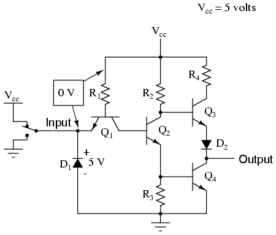
En este caso, el diodo D1tendrá polarización inversa y, por lo tanto, no conducirá ninguna corriente. De hecho, el único propósito de tener D1en el circuito es para evitar daños al transistor en el caso de unanegativovoltaje que se imprime en la entrada (un voltaje que es negativo, en lugar de positivo, con respecto a tierra). Sin voltaje entre la base y el emisor del transistor Q1, tampoco esperaríamos que pasara corriente a través de él. Sin embargo, por extraño que parezca, el transistor Q1no se utiliza como es habitual en un transistor. En realidad, Q.1se utiliza en este circuito como nada más que un par de diodos consecutivos. El siguiente esquema muestra la función real de Q.1:
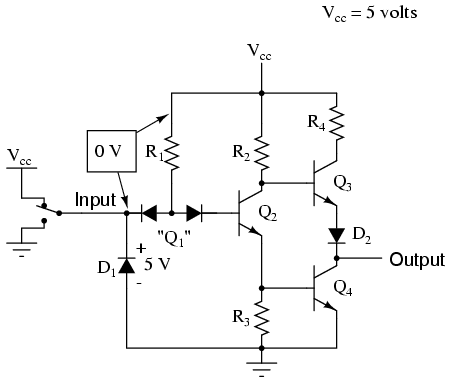
El propósito de estos diodos es "dirigir" la corriente hacia o lejos de la base del transistor Q.2, dependiendo del nivel lógico de la entrada. Exactamente cómo estos dos diodos son capaces de "dirigir" la corriente no es exactamente obvio en la primera inspección, por lo que puede ser necesario un breve ejemplo para comprenderlo. Supongamos que tenemos el siguiente circuito de diodo/resistencia, que representa las uniones base-emisor de los transistores Q2y q4como diodos individuales, eliminando todas las demás partes del circuito para que podamos concentrarnos en la corriente "dirigida" a través de los dos diodos consecutivos:
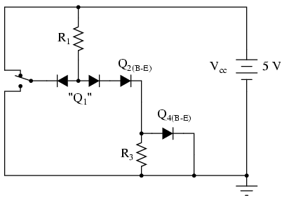
Con el interruptor de entrada en la posición "arriba" (conectado a Vcc), debería ser obvio que no habrá corriente a través del diodo de dirección izquierdo de Q1, porque no hay voltaje en el diodo-interruptor-R1-Cambiar bucle para motivar el flujo de electrones. Sin embargo, habrá corriente a través del diodo de dirección derecho de Q1, así como a través de Q2unión base-diodo emisor y Q4Unión base-diodo emisor:
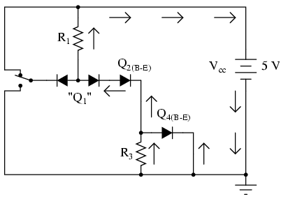
Esto nos dice que en el circuito de puerta real, los transistores Q2y q4tendrán corriente de base, que los encenderá para conducir la corriente del colector. El voltaje total caído entre la base de Q1(el nodo que une los dos diodos de dirección espalda con espalda) y tierra será de aproximadamente 2,1 voltios, igual a las caídas de voltaje combinadas de tres uniones PN: el diodo de dirección derecho, Q2el diodo emisor de base y Q4Diodo emisor de base.
Ahora, muevamos el interruptor de entrada a la posición "abajo" y veamos qué sucede:
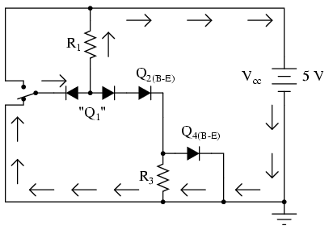
Si tuviéramos que medir la corriente en este circuito, encontraríamos queallde la corriente pasa por el diodo de dirección izquierdo de Q1 y ningunode él a través del diodo derecho. ¿Por qué es esto? Todavía parece que hay un camino completo para la corriente a través de Q4diodo de Q2El diodo de , el diodo derecho del par y R.1Entonces, ¿por qué no habrá corriente por ese camino?
Recuerde que los diodos de unión PN son dispositivos muy no lineales: ni siquiera comienzan a conducir corriente hasta que el voltaje directo aplicado a través de ellos alcanza una cierta cantidad mínima, aproximadamente 0,7 voltios para el silicio y 0,3 voltios para el germanio. Y luego, cuando comiencen a conducir corriente, no caerán sustancialmente más de 0,7 voltios. Cuando el interruptor en este circuito está en la posición "hacia abajo", el diodo izquierdo del par de diodos de dirección es completamente conductor, por lo que cae aproximadamente 0,7 voltios a través de él y no más.
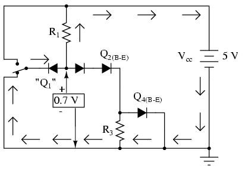
Recuerde que con el interruptor en la posición "arriba" (transistores Q2y q4conduciendo), hubo una caída de aproximadamente 2,1 voltios entre esos mismos dos puntos (Q1base y suelo), que también resulta ser elmínimovoltaje necesario para polarizar directamente tres uniones PN de silicio conectadas en serie a un estado de conducción. Los 0,7 voltios proporcionados por la caída de voltaje directo del diodo izquierdo son simplemente insuficientes para permitir que cualquier electrón fluya a través de la cadena en serie del diodo derecho, Q2el diodo y el R3//Q4subcircuito paralelo de diodos, por lo que ningún electrón fluye a través de ese camino. Sin corriente a través de las bases de ninguno de los transistores Q2o Q4, ninguno de los dos podrá conducir la corriente del colector: transistores Q2y q4ambos estarán en un estado de corte.
En consecuencia, esta configuración de circuito permite una conmutación del 100 por ciento de Q2corriente de base (y por lo tanto control sobre el resto del circuito de compuerta, incluido el voltaje en la salida) mediante la desviación de corriente a través del diodo de dirección izquierdo.
En el caso de nuestro circuito de compuerta de ejemplo, la entrada se mantiene "alta" mediante el interruptor (conectado a Vcc), formando el diodo de dirección izquierdo (el voltaje cae a cero). Sin embargo, el diodo de dirección derecho conduce corriente a través de la base de Q.2, a través de la resistencia R1:
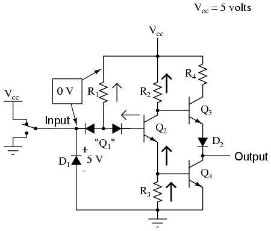
Con corriente base proporcionada, transistor Q2se activará. Más específicamente, serásaturadoen virtud de la corriente más que adecuada permitida por R1a través de la base. con q2saturado, resistencia R3caerá suficiente voltaje para polarizar directamente la unión base-emisor del transistor Q4, saturándolo así también:
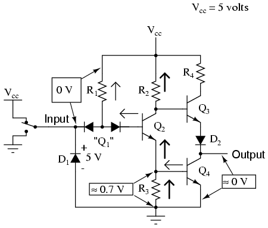
con q4saturado, el terminal de salida será casi directamente cortocircuitado a tierra, dejando el terminal de salida a un voltaje (en referencia a tierra) de casi 0 voltios, o un nivel lógico binario "0" ("bajo"). Debido a la presencia del diodo D2, no habrá suficiente voltaje entre la base de Q3y su emisor para encenderlo, por lo que permanece en corte.
Veamos ahora qué sucede si invertimos el nivel lógico de la entrada a un "0" binario accionando el interruptor de entrada:
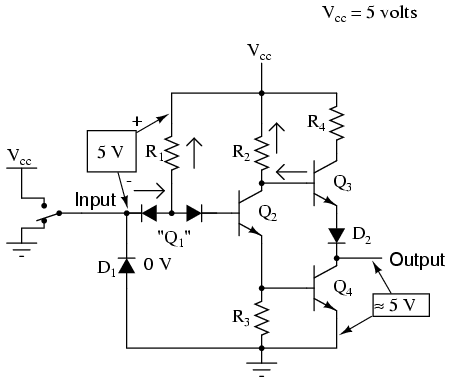
Ahora habrá corriente a través del diodo de dirección izquierdo de Q.1y no hay corriente a través del diodo de dirección derecho. Esto elimina la corriente a través de la base de Q.2, apagándolo así. con q2apagado, ya no hay un camino para Q4corriente base, entonces Q4también entra en corte. q3, por otro lado, ahora tiene suficiente voltaje caído entre su base y tierra para polarizar directamente su unión base-emisor y saturarla, elevando así el voltaje del terminal de salida a un estado "alto". En realidad, el voltaje de salida será de alrededor de 4 voltios dependiendo del grado de saturación y de cualquier corriente de carga, pero aún así será lo suficientemente alto como para ser considerado un nivel lógico "alto" (1).
Con esto, nuestra simulación del circuito inversor está completa: un "1" de entrada da un "0" de salida, y viceversa.
El observador astuto notará que la entrada de este circuito inversor asumirá un estado "alto" de flotación izquierda (no conectado a ninguno de los Vcco tierra). Con el terminal de entrada desconectado, no habrá corriente a través del diodo de dirección izquierdo de Q1, dejando todo R1La corriente pasa por Q.2la base, saturando así Q2y llevar la salida del circuito a un estado "bajo":
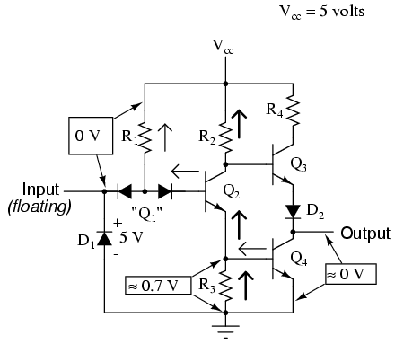
La tendencia de un circuito de este tipo a asumir un estado de entrada elevado si se deja flotando es compartida por todos los circuitos de compuerta basados en este tipo de diseño, conocida comoTtransistor aTresistorLlógica, oTTL. Esta característica se puede aprovechar para simplificar el diseño de la puerta de una puerta.produccióncircuitos, sabiendo que las salidas de las compuertas generalmente controlan las entradas de otras compuertas. Si la entrada de un circuito de puerta TTL asume un estado alto cuando está flotante, entonces la salida de cualquier puerta que impulse una entrada TTL solo necesita proporcionar un camino a tierra para un estado bajo y estar flotante para un estado alto. Este concepto puede requerir mayor elaboración para una comprensión completa, por lo que lo exploraré en detalle aquí.
Un circuito de puerta como acabamos de analizar tiene la capacidad de manejar la corriente de salida en dos direcciones: entrada y salida. Técnicamente esto se conoce comoabastecimiento y hundimiento de corriente, respectivamente. Cuando la salida de la puerta es alta, hay continuidad desde el terminal de salida a Vcca través del transistor de salida superior (Q3), permitiendo que los electrones fluyan desde tierra, a través de una carga, hacia el terminal de salida de la puerta, a través del emisor de Q3, y finalmente hasta la Vccterminal de alimentación (lado positivo de la fuente de alimentación CC):
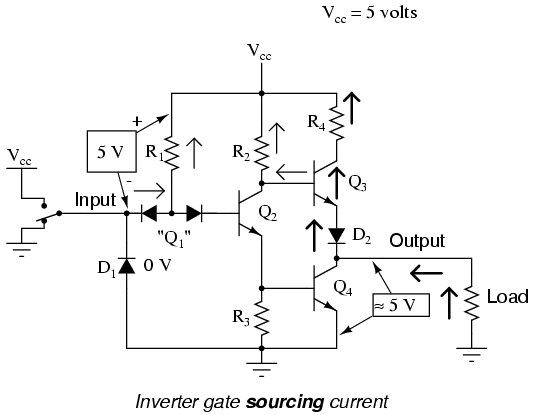
Para simplificar este concepto, podemos mostrar la salida de un circuito de compuerta como un interruptor de doble tiro, capaz de conectar el terminal de salida a Vcco suelo, dependiendo de su estado. Para una puerta que genera un nivel lógico "alto", la combinación de Q3saturado y Q4El corte es análogo a un interruptor de doble tiro en el modo "V".cc"posición, que proporciona un camino para la corriente a través de una carga conectada a tierra:
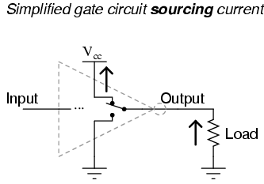
Tenga en cuenta que este interruptor de dos posiciones que se muestra dentro del símbolo de la puerta es representativo de los transistores Q3y q4conectando alternativamente el terminal de salida a Vcco tierra,notdel interruptor mostrado anteriormente enviando una señal de entrada a la puerta!
Por el contrario, cuando un circuito de compuerta envía un nivel lógico "bajo" a una carga, es análogo a que el interruptor de doble tiro se coloque en la posición "tierra". La corriente irá en sentido contrario si la resistencia de carga se conecta a Vcc: desde tierra, a través del emisor de Q4, fuera del terminal de salida, a través de la resistencia de carga, y de regreso a Vcc. En esta condición, se dice que la puerta estáhundiendocorriente:
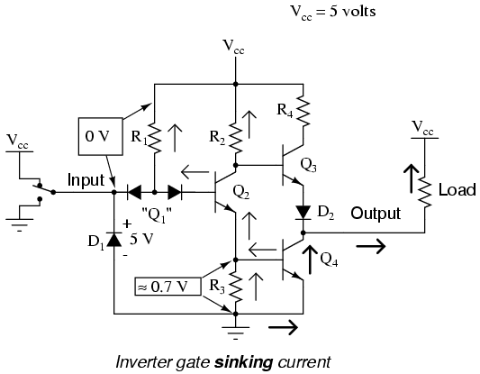
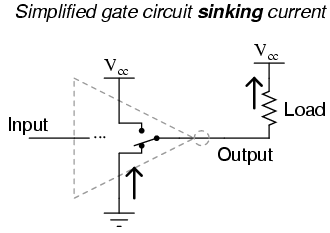
La combinación de Q3y q4funcionando como un par de transistores "push-pull" (también conocido comosalida del tótem) tiene la capacidad de generar corriente (consumir corriente a Vcc) o corriente disipadora (corriente de salida desde tierra) a una carga. Sin embargo, una puerta TTL estándaraportenunca necesita fuente de corriente, solo hundida. Es decir, dado que una entrada de puerta TTL naturalmente asume un estado alto si se deja flotando, cualquier salida de puerta que impulse una entrada TTL solo necesita sumidero de corriente para proporcionar una entrada "0" o "baja", y no necesita generar corriente para proporcionar un nivel lógico "1" o "alto" en la entrada de la puerta receptora:
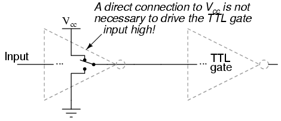
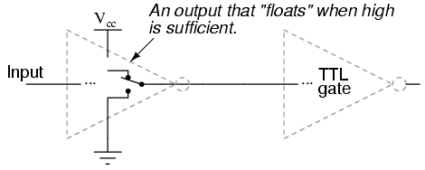
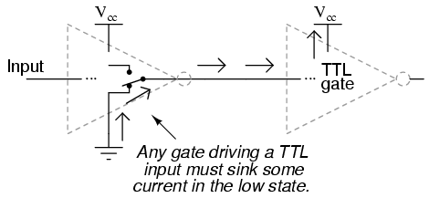
Esto significa que tenemos la opción de simplificar la etapa de salida de un circuito de compuerta para eliminar Q3en total. El resultado se conoce comosalida de colector abierto:
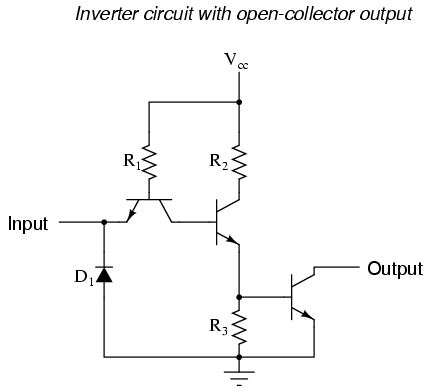
Para designar circuitos de salida de colector abierto dentro de un símbolo de puerta estándar, se utiliza un marcador especial. Aquí se muestra el símbolo de una puerta inversora con salida de colector abierto:
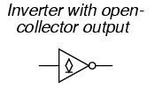
Tenga en cuenta que la condición predeterminada "alta" de una entrada de puerta flotante solo es cierta para circuitos TTL y no necesariamente para otros tipos, especialmente para puertas lógicas construidas con transistores de efecto de campo.
- REVISAR:
- Una puerta inversora, o NO, es aquella que genera el estado opuesto al de entrada. Es decir, una entrada "baja" (0) da una salida "alta" (1), y viceversa.
- Los circuitos de puerta construidos con resistencias, diodos y transistores bipolares como se ilustra en esta sección se denominanTTL. TTL es un acrónimo que significaLógica transistor a transistor. Existen otras metodologías de diseño utilizadas en circuitos de compuerta, algunas de las cuales utilizan transistores de efecto de campo en lugar de transistores bipolares.
- Se dice que una puerta esabastecimientocorriente cuando proporciona un camino para la corriente entre el terminal de salida y el lado positivo de la fuente de alimentación de CC (Vcc). En otras palabras, está conectando el terminal de salida alfuente de energía(+V).
- Se dice que una puerta eshundimientocorriente cuando proporciona un camino para la corriente entre el terminal de salida y tierra. En otras palabras, está poniendo a tierra (hundiendo) el terminal de salida.
- Circuitos de puerta contótemlas etapas de salida son capaces defuente y hundircorriente. Circuitos de puerta concoleccionista abiertolas etapas de salida solo pueden absorber corriente y no generar corriente. Las compuertas de colector abierto son prácticas cuando se usan para controlar entradas de compuerta TTL porque las entradas TTL no requieren fuente de corriente.
La puerta "buffer" (seguidor)
Si tuviéramos que conectar dos puertas inversoras para que la salida de una alimentara la entrada de la otra, las dos funciones de inversión se "cancelarían" entre sí para que no hubiera inversión desde la entrada hasta la salida final:
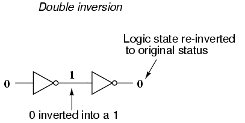
Si bien esto puede parecer algo inútil, tiene una aplicación práctica. Recuerde que los circuitos de puerta son señales.amplificadores, independientemente de qué función lógica puedan realizar. Una fuente de señal débil (una que no es capaz de suministrar o suministrar mucha corriente a una carga) puede reforzarse mediante dos inversores como el par que se muestra en la ilustración anterior. El nivel lógico no cambia, pero todas las capacidades de suministro o hundimiento de corriente del inversor final están disponibles para impulsar una resistencia de carga si es necesario.
Para ello se utiliza una puerta lógica especial llamadabufferEstá fabricado para realizar la misma función que dos inversores. Su símbolo es simplemente un triángulo, sin ninguna "burbuja" invertida en el terminal de salida:
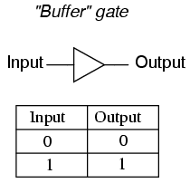
El diagrama esquemático interno de un búfer de colector abierto típico no es muy diferente del de un inversor simple: solo se agrega una etapa más de transistor de emisor común para reinvertir la señal de salida.
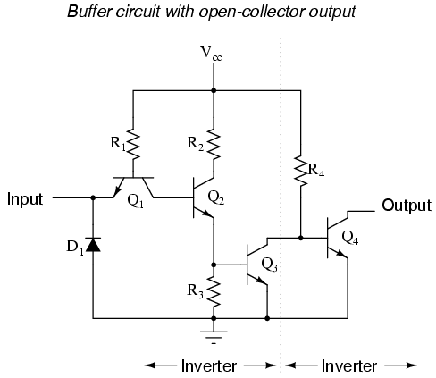
Analicemos este circuito en busca de dos condiciones: un nivel lógico de entrada de "1" y un nivel lógico de entrada de "0". Primero, una entrada "alta" (1):
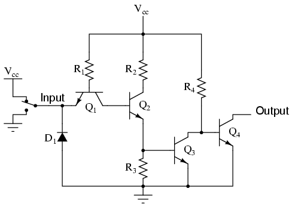
Como antes con el circuito inversor, la entrada "alta" no provoca conducción a través del diodo de dirección izquierdo de Q1(unión PN emisor-base). Todo R1La corriente pasa por la base del transistor Q.2, saturándolo:
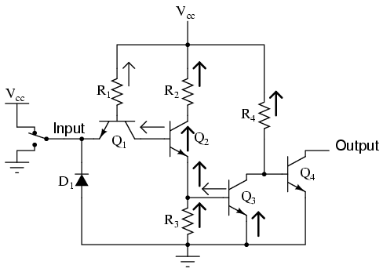
Tener Q2saturado causa Q3También se satura, lo que provoca una caída de voltaje muy pequeña entre la base y el emisor del transistor de salida final Q.4. Así, Q4estará en modo de corte y no conducirá corriente. El terminal de salida será flotante (ni conectado a tierra ni a V).cc), y esto será equivalente a un estado "alto" en la entrada de la siguiente puerta TTL a la que ésta alimenta. Por lo tanto, una entrada "alta" da una salida "alta".
Con una señal de entrada "baja" (terminal de entrada conectado a tierra), el análisis se parece a esto:
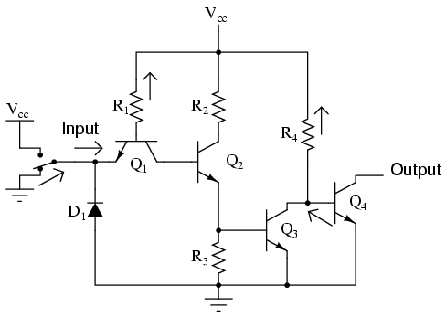
Todo R1La corriente de ahora se desvía a través del interruptor de entrada, eliminando así la corriente de base a través de Q2. Esto fuerza al transistor Q2en corte para que ninguna corriente base pase por Q3cualquiera. con q3corte también, Q4Esto será saturado por la corriente a través de la resistencia R.4, conectando así el terminal de salida a tierra, convirtiéndolo en un nivel lógico "bajo". Por lo tanto, una entrada "baja" da una salida "baja".
El diagrama esquemático de un circuito buffer con transistores de salida de tótem es un poco más complejo, pero los principios básicos, y ciertamente la tabla de verdad, son los mismos que para el circuito de colector abierto:
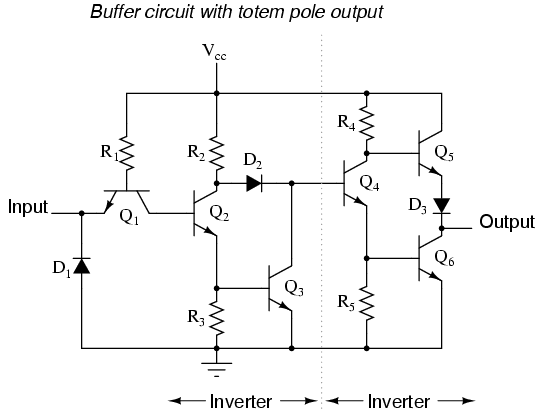
- REVISAR:
- Dos puertas inversoras, o NO, conectadas en "serie" para invertir y luego volver a invertir, un bit binario realiza la función de un búfer. Las puertas de búfer simplemente sirven para amplificar la señal: tomar una fuente de señal "débil" que no es capaz de generar o absorber mucha corriente y aumentar la capacidad de corriente de la señal para poder controlar una carga.
- Los circuitos buffer están simbolizados por un símbolo de triángulo sin "burbuja" de inversor.
- Los buffers, al igual que los inversores, pueden fabricarse en forma de salida de colector abierto o de salida de tótem.
Multiple-input gates
Los inversores y buffers agotan las posibilidades de los circuitos de puerta de entrada única. ¿Qué más se puede hacer con una sola señal lógica sino amortiguarla o invertirla? Para explorar más posibilidades de puertas lógicas, debemos agregar más terminales de entrada a los circuitos.
Agregar más terminales de entrada a una puerta lógica aumenta la cantidad de posibilidades de estado de entrada. Con una puerta de entrada única, como el inversor o el buffer, solo puede haber dos estados de entrada posibles: o la entrada es "alta" (1) o es "baja" (0). Como se mencionó anteriormente en este capítulo, una puerta de dos entradas tienecuatroposibilidades (00, 01, 10 y 11). Una puerta de tres entradas tieneochoposibilidades (000, 001, 010, 011, 100, 101, 110 y 111) para estados de entrada. El número de posibles estados de entrada es igual a dos elevado a la potencia del número de entradas:
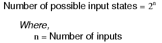
Este aumento en el número de posibles estados de entrada obviamente permite un comportamiento de puerta más complejo. Ahora, en lugar de simplemente invertir o amplificar (almacenar) un único nivel lógico "alto" o "bajo", la salida de la puerta estará determinada por cualquiercombinaciónde unos y ceros está presente en los terminales de entrada.
Dado que son posibles tantas combinaciones con solo unos pocos terminales de entrada, existen muchos tipos diferentes de compuertas de entrada múltiple, a diferencia de las compuertas de entrada única que solo pueden ser inversores o buffers. En esta sección se presentará cada tipo de puerta básica, mostrando su símbolo estándar, tabla de verdad y operación práctica. Los circuitos TTL reales de estas diferentes puertas se explorarán en secciones posteriores.
La puerta AND
Una de las puertas de entradas múltiples más fáciles de entender es la puerta AND, llamada así porque la salida de esta puerta será "alta" (1) si y sólo siallentradas (primera entradayla segunda entraday. . .) son "altos" (1). Si alguna entrada está "baja" (0), se garantiza que la salida también estará en un estado "bajo".
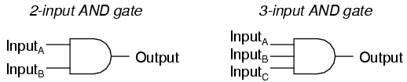
En caso de que se lo esté preguntando, las puertas AND se fabrican con más de tres entradas, pero esto es menos común que la variedad simple de dos entradas.
La tabla de verdad de una puerta AND de dos entradas se ve así:
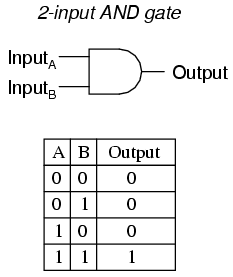
Lo que significa esta tabla de verdad en términos prácticos se muestra en la siguiente secuencia de ilustraciones, con la puerta AND de 2 entradas sujeta a todas las posibilidades de niveles lógicos de entrada. Un LED (diodo emisor de luz) proporciona una indicación visual del nivel lógico de salida:
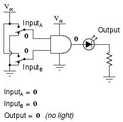
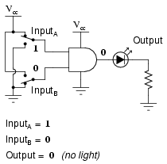
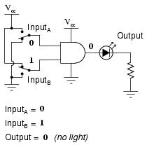
Sólo con todas las entradas elevadas a niveles lógicos "altos" la salida de la puerta AND pasa a "alto", energizando así el LED sólo para uno de los cuatro estados de combinación de entradas.
La puerta NAND
Una variación de la idea de la puerta AND se llama puerta NAND. La palabra "NAND" es una contracción verbal de las palabras NOT y AND. Esencialmente, una puerta NAND se comporta igual que una puerta AND con una puerta NOT (inversora) conectada al terminal de salida. Para simbolizar esta inversión de la señal de salida, el símbolo de la puerta NAND tiene una burbuja en la línea de salida. La tabla de verdad para una puerta NAND es, como cabría esperar, exactamente opuesta a la de una puerta AND:
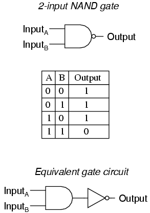
Al igual que las puertas AND, las puertas NAND se fabrican con más de dos entradas. En tales casos, se aplica el mismo principio general: la salida será "baja" (0) si y sólo si todas las entradas son "altas" (1). Si alguna entrada es "baja" (0), la salida pasará a "alta" (1).
La puerta OR
Nuestra siguiente puerta a investigar es la puerta OR, llamada así porque la salida de esta puerta será "alta" (1) sianyde las entradas (primera entradaola segunda entradao. . .) son "altos" (1). La salida de una puerta OR pasa a "baja" (0) si y sólo si todas las entradas son "bajas" (0).
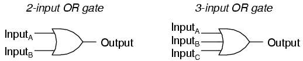
La tabla de verdad de una puerta OR de dos entradas se ve así:
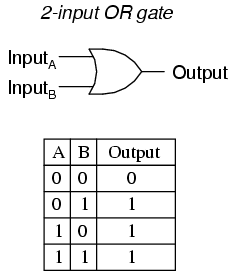
La siguiente secuencia de ilustraciones demuestra la función de la puerta OR, con las 2 entradas experimentando todos los niveles lógicos posibles. Un LED (diodo emisor de luz) proporciona una indicación visual del nivel lógico de salida de la puerta:
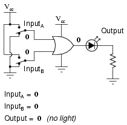
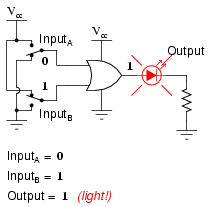
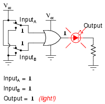
Una condición en la que cualquier entrada se eleva a un nivel lógico "alto" hace que la salida de la puerta OR pase a "alto", energizando así el LED para tres de los cuatro estados de combinación de entrada.
La puerta NOR
Como habrás sospechado, la puerta NOR es una puerta O con su salida invertida, al igual que una puerta NAND es una puerta Y con una salida invertida.
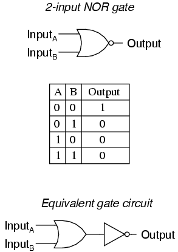
Las puertas NOR, como todas las demás puertas de entradas múltiples vistas hasta ahora, se pueden fabricar con más de dos entradas. Aun así, se aplica el mismo principio lógico: la salida pasa a "baja" (0) si alguna de las entradas se vuelve "alta" (1). La salida es "alta" (1) sólo cuando todas las entradas son "bajas" (0).
La puerta AND negativa
Una puerta AND negativa funciona igual que una puerta AND con todas sus entradas invertidas (conectadas a través de puertas NOT). De acuerdo con la convención estándar de símbolos de puerta, estas entradas invertidas se indican mediante burbujas. Contrariamente al primer instinto de la mayoría de las personas, el comportamiento lógico de una puerta AND Negativa esnotLo mismo que una puerta NAND. Su tabla de verdad, en realidad, es idéntica a una puerta NOR:
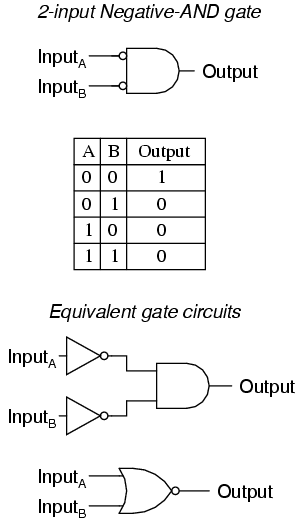
La puerta OR negativa
Siguiendo el mismo patrón, una puerta O negativa funciona igual que una puerta O con todas sus entradas invertidas. De acuerdo con la convención estándar de símbolos de puerta, estas entradas invertidas se indican mediante burbujas. El comportamiento y la tabla de verdad de una puerta OR Negativo es el mismo que el de una puerta NAND:
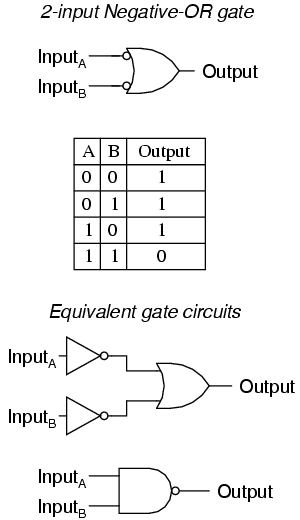
La puerta OR exclusiva (XOR)
Los últimos seis tipos de puertas son variaciones bastante directas de tres funciones básicas: Y, O y NO. La puerta OR Exclusiva, sin embargo, es algo bastante diferente.
Las puertas OR exclusivas generan un nivel lógico "alto" (1) si las entradas están endiferenteniveles lógicos, ya sea 0 y 1 o 1 y 0. Por el contrario, generan un nivel lógico "bajo" (0) si las entradas están en elmismoniveles lógicos. La puerta Exclusive-OR (a veces llamada XOR) tiene un símbolo y un patrón de tabla de verdad que es único:
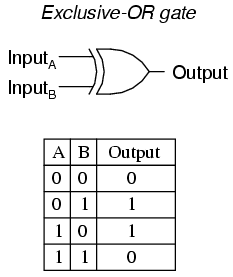
Existen circuitos equivalentes para una puerta OR exclusiva formada por puertas AND, OR y NOT, tal como los había para NAND, NOR y las puertas de entrada negativa. Un enfoque bastante directo para simular una puerta OR exclusiva es comenzar con una puerta OR normal y luego agregar puertas adicionales para inhibir que la salida pase a "alto" (1) cuando ambas entradas son "altas" (1):
En este circuito, la puerta AND final actúa como un buffer para la salida de la puerta OR siempre que la salida de la puerta NAND sea alta, que es lo que ocurre con las tres primeras combinaciones de estados de entrada (00, 01 y 10). Sin embargo, cuando ambas entradas son "altas" (1), la puerta NAND genera un nivel lógico "bajo" (0), lo que obliga a la puerta AND final a producir una salida "baja" (0).
Otro circuito equivalente para la puerta OR exclusiva utiliza una estrategia de dos puertas AND con inversores, configuradas para generar salidas "altas" (1) para las condiciones de entrada 01 y 10. Una puerta OR final permite que cualquiera de las salidas "altas" de las puertas AND cree una salida "alta" final:
Las puertas OR exclusivas son muy útiles para circuitos donde se van a comparar dos o más números binarios bit por bit, y también para la detección de errores (verificación de paridad) y la conversión de códigos (binario a Gray y viceversa).
La puerta NOR exclusiva (XNOR)
Finalmente, nuestra última puerta de análisis es la puerta NOR exclusiva, también conocida como puerta XNOR. Es equivalente a una puerta OR exclusiva con salida invertida. La tabla de verdad para esta puerta es exactamente opuesta a la de la puerta OR Exclusivo:
Como lo indica la tabla de verdad, el propósito de una puerta NOR exclusiva es generar un nivel lógico "alto" (1) siempre que ambas entradas estén en los mismos niveles lógicos (ya sea 00 u 11).
- REVISAR:
- Regla para una puerta AND: la salida es "alta" sólo si la primera entradayLa segunda entrada son ambas "altas".
- Regla para una puerta OR: la salida es "alta" si la entrada Aola entrada B son "altas".
- Regla para una puerta NAND: la salida esnot"alto" si tanto la primera entradayla segunda entrada es "alta".
- Regla para una puerta NOR: la salida esnot"alto" si la primera entradaola segunda entrada es "alta".
- Una puerta Y negativa se comporta como una puerta NOR.
- Una puerta O negativo se comporta como una puerta NAND.
- Regla para una puerta OR exclusiva: la salida es "alta" si los niveles lógicos de entrada sondiferente.
- Regla para una puerta NOR exclusiva: la salida es "alta" si los niveles lógicos de entrada son losmismo.
Puertas TTL NAND y AND
Supongamos que modificamos nuestro circuito inversor de colector abierto básico, agregando un segundo terminal de entrada como el primero:
Este esquema ilustra un circuito real, pero no se llama "inversor de dos entradas". A través del análisis descubriremos cuál es la función lógica de este circuito y, en consecuencia, cómo debería designarse.
Al igual que en el caso del inversor y el buffer, el grupo de diodos de "dirección" marcado con "Q1" en realidad tiene la forma de un transistor, aunque no se utiliza con ninguna capacidad de amplificación. Desafortunadamente, una estructura de transistor NPN simple es inadecuada para simular latresSe necesitan uniones PN en esta red de diodos, por lo que se necesita un transistor (y símbolo) diferente. Este transistor tiene un colector, una base ytwoemisores, y en el circuito se ve así:
En el circuito de entrada única (inversor), conectar a tierra la entrada dio como resultado una salida que asumió el estado "alto" (1). En el caso de la configuración de salida de colector abierto, este estado "alto" era simplemente "flotante". Permitir que la entrada flote (o se conecte a Vcc) dio como resultado que la salida se conectara a tierra, que es el estado "bajo" o 0. Así, un 1 dentro resultó en un 0 fuera, y viceversa.
Dado que este circuito se parece mucho al circuito inversor simple, la única diferencia es un segundo terminal de entrada conectado de la misma manera a la base del transistor Q.2, podemos decir que cada una de las entradas tendrá el mismo efecto en la salida. Es decir, si cualquiera de las entradas está conectada a tierra, el transistor Q2se verá obligado a entrar en una condición de corte, convirtiendo así a Q3apagado y flotación de la salida (la salida pasa a "alto"). La siguiente serie de ilustraciones muestra esto para tres estados de entrada (00, 01 y 10):
En cualquier caso donde haya una entrada conectada a tierra ("baja"), se garantiza que la salida será flotante ("alta"). Por el contrario, la única vez que la salida pasará a "baja" es si el transistor Q3se enciende, lo que significa transistor Q2debe estar encendido (saturado), lo que significa que ninguna entrada puede desviarse R1corriente alejada de la base de Q2. La única condición que cumplirá este requisito es cuando ambas entradas sean "altas" (1):
Al recopilar y tabular estos resultados en una tabla de verdad, vemos que el patrón coincide con el de la puerta NAND:
En la sección anterior sobre puertas NAND, este tipo de puerta se creó tomando una puerta AND y aumentando su complejidad agregando un inversor (NO puerta) a la salida. Sin embargo, cuando examinamos este circuito, vemos que la función NAND es en realidad el modo de operación más simple y natural para este diseño TTL. Para crear una función AND usando circuitos TTL, necesitamosaumentarla complejidad de este circuito al agregar una etapa inversora a la salida, al igual que tuvimos que agregar una etapa de transistor adicional al circuito inversor TTL para convertirlo en un búfer:
A continuación se muestran la tabla de verdad y el circuito de puerta equivalente (una puerta NAND de salida invertida):
Por supuesto, tanto los circuitos de puerta NAND como AND pueden diseñarse con etapas de salida de tótem en lugar de colector abierto. Opto por mostrar las versiones de coleccionista abierto en aras de la simplicidad.
- REVISAR:
- Se puede crear una puerta TTL NAND tomando un circuito inversor TTL y agregando otra entrada.
- Se puede crear una puerta AND agregando una etapa inversora a la salida del circuito de puerta NAND.
Puertas TTL NOR y OR
Examinemos el siguiente circuito TTL y analicemos su funcionamiento:
Transistores Q1y q2Ambos están dispuestos de la misma manera que hemos visto para el transistor Q.1en todos los demás circuitos TTL. En lugar de funcionar como amplificadores, Q1y q2Ambos se utilizan como redes de "dirección" de dos diodos. Podemos reemplazar Q1y q2con conjuntos de diodos para ayudar a ilustrar:
Si la entrada A se deja flotante (o se conecta a Vcc), la corriente pasará por la base del transistor Q3saturándolo. Si la entrada A está conectada a tierra, esa corriente se desvía de Q3la base a través del diodo de dirección izquierdo de "Q1," obligando así a Q3en corte. Lo mismo puede decirse de la entrada B y del transistor Q.4: el nivel lógico de la entrada B determina Q4Conducción: ya sea saturada o cortada.
Observe cómo los transistores Q3y q4están en paralelo en sus terminales colector y emisor. En esencia, estos dos transistores actúan como interruptores en paralelo, permitiendo que la corriente a través de las resistencias R3y r4según los niveles lógicos de las entradas A y B. Sianyla entrada está en un nivel "alto" (1), entonces al menos uno de los dos transistores (Q3y/o Q4) se saturará, permitiendo que la corriente pase a través de las resistencias R3y r4, y encendiendo el transistor de salida final Q5para una salida de nivel lógico "bajo" (0). La única forma en que la salida de este circuito puede asumir un estado "alto" (1) es siambos Q3y q4están cortados, lo que significaamboslas entradas tendrían que estar conectadas a tierra o "bajas" (0).
La tabla de verdad de este circuito, entonces, es equivalente a la de la puerta NOR:
Para convertir este circuito de puerta NOR en una puerta OR, tendríamos que invertir el nivel lógico de salida con otra etapa de transistor, tal como lo hicimos con el ejemplo de la puerta NAND a AND:
A continuación se muestran la tabla de verdad y el circuito de puerta equivalente (una puerta NOR de salida invertida):
Por supuesto, las etapas de salida de tótem también son posibles en circuitos lógicos NOR y OR TTL.
- REVISAR:
- Se puede crear una puerta OR agregando una etapa inversora a la salida del circuito de la puerta NOR.
Circuitería de puertas CMOS
Hasta este punto, nuestro análisis de circuitos lógicos de transistores se ha limitado aTTLparadigma de diseño, mediante el cual se utilizan transistores bipolares, y la estrategia general de entradas flotantes es equivalente a "alta" (conectada a Vcc) entradas y, en consecuencia, se mantiene la asignación de etapas de salida de "colector abierto". Sin embargo, esta no es la única forma en que podemos construir puertas lógicas.
En el diseño de circuitos de puerta se pueden utilizar transistores de efecto de campo, particularmente los de puerta aislada. Al ser dispositivos controlados por voltaje en lugar de controlados por corriente, los IGFET tienden a permitir diseños de circuitos muy simples. Tomemos, por ejemplo, el siguiente circuito inversor construido con IGFET de canal P y N:
Observe la "Vdd" etiqueta en el terminal positivo de la fuente de alimentación. Esta etiqueta sigue la misma convención que "Vcc" en circuitos TTL: representa la tensión constante aplicada al drenaje de un transistor de efecto de campo, en referencia a tierra.
Conectemos este circuito de puerta a una fuente de alimentación y a un interruptor de entrada, y examinemos su funcionamiento. Tenga en cuenta que estos transistores IGFET son de tipo E (modo de mejora), y también lo sonnormalmente apagadodispositivos. Se necesita un voltaje aplicado entre la compuerta y el drenaje (en realidad, entre la compuerta y el sustrato) de la polaridad correcta para polarizarlos.on.
El transistor superior es un IGFET de canal P. Cuando el canal (sustrato) se hace más positivo que la puerta (puerta negativa en referencia al sustrato), el canal se mejora y se permite corriente entre la fuente y el drenaje. Entonces, en la ilustración anterior, el transistor superior está encendido.
El transistor inferior, que tiene voltaje cero entre la puerta y el sustrato (fuente), está en su modo normal:off. Por lo tanto, la acción de estos dos transistores es tal que el terminal de salida del circuito de puerta tiene una conexión sólida a Vddy una conexión a tierra de muy alta resistencia. Esto hace que la salida sea "alta" (1) para el estado "bajo" (0) de la entrada.
A continuación, moveremos el interruptor de entrada a su otra posición y veremos qué sucede:
Ahora el transistor inferior (canal N) está saturado porque tiene suficiente voltaje de la polaridad correcta aplicada entre la puerta y el sustrato (canal) para encenderlo (positivo en la puerta, negativo en el canal). El transistor superior, al que se le aplica voltaje cero entre su puerta y el sustrato, está en su modo normal:off. Por lo tanto, la salida de este circuito de puerta ahora es "baja" (0). Claramente, este circuito exhibe el comportamiento de un inversor, o NO de una puerta.
El uso de transistores de efecto de campo en lugar de transistores bipolares ha simplificado enormemente el diseño de la puerta del inversor. Tenga en cuenta que la salida de esta compuerta nunca flota como es el caso del circuito TTL más simple: tiene una configuración natural de "tótem", capaz de generar y hundir corriente de carga. La clave del elegante diseño de este circuito de puerta es lacomplementariouso de IGFET de canal P y N. Dado que los IGFET se conocen más comúnmente como MOSFET (Metal-Oxide-SsemiconductorFcampoEefectoTtransistor), y este circuito utiliza transistores de canal P y N juntos, la clasificación general dada a circuitos de puerta como este esCMOS: CcomplementarioMetálOxidoSsemiconductor.
Los circuitos CMOS no están afectados por las no linealidades inherentes de los transistores de efecto de campo, porque como circuitos digitales sus transistores siempre operan en cualquiera de los dos lados:saturado o cortemodos y nunca en elactivomodo. Sin embargo, sus entradas son sensibles a los altos voltajes generados por fuentes electrostáticas (electricidad estática), e incluso pueden activarse en estados "alto" (1) o "bajo" (0) por fuentes de voltaje espurio si se dejan flotando. Por esta razón, no es aconsejable permitir que una entrada de puerta lógica CMOS flote bajo ninguna circunstancia. Tenga en cuenta que esto es muy diferente del comportamiento de una puerta TTL donde una entrada flotante se interpreta de forma segura como un nivel lógico "alto" (1).
Esto puede causar un problema si la entrada a una puerta lógica CMOS es controlada por un interruptor de un solo paso, donde un estado tiene la entrada sólidamente conectada a Vddo tierra y el otro estado tiene la entrada flotante (no conectada a nada):
Además, este problema surge si una entrada de puerta CMOS está siendo controlada por uncoleccionista abiertoPuerta TTL. Debido a que la salida de dicha puerta TTL flota cuando sube a "alto" (1), la entrada de la puerta CMOS quedará en un estado incierto:
Afortunadamente, existe una solución fácil a este dilema, una que se utiliza con frecuencia en los circuitos lógicos CMOS. Siempre que un interruptor de un solo tiro (o cualquier otro tipo de salida de puerta incapaz deamboscorriente de abastecimiento y sumidero) se utiliza para controlar una entrada CMOS, una resistencia conectada a Vddo se puede utilizar tierra para proporcionar un nivel lógico estable para el estado en el que la salida del dispositivo impulsor está flotando. El valor de esta resistencia no es crítico: normalmente 10 kΩ son suficientes. Cuando se utiliza para proporcionar un nivel lógico "alto" (1) en el caso de una fuente de señal flotante, esta resistencia se conoce comoresistencia pull-up:
Cuando se utiliza una resistencia de este tipo para proporcionar un nivel lógico "bajo" (0) en el caso de una fuente de señal flotante, se conoce comoresistencia desplegable. Nuevamente, el valor de una resistencia desplegable no es crítico:
Debido a que las salidas TTL de colector abierto siempre bajan, nunca generan, tiran o generan corriente.upSe necesitan resistencias al conectar una salida de este tipo a una entrada de puerta CMOS:
Aunque las puertas CMOS utilizadas en los ejemplos anteriores eran todas inversoras (de entrada única), el mismo principio de resistencias pullup y pulldown se aplica a las puertas CMOS de múltiples entradas. Por supuesto, se requerirá una resistencia pullup o pulldown separada para cada entrada de puerta:
Esto nos lleva a la siguiente pregunta: ¿cómo diseñamos puertas CMOS de múltiples entradas como AND, NAND, OR y NOR? No es sorprendente que las respuestas a esta pregunta revelen una simplicidad de diseño muy similar a la del inversor CMOS respecto a su equivalente TTL.
Por ejemplo, aquí está el diagrama esquemático de una puerta CMOS NAND:
Observe cómo los transistores Q1y q3se parecen al par complementario conectado en serie del circuito inversor. Ambos están controlados por la misma señal de entrada (entrada A), el transistor superior se apaga y el transistor inferior se enciende cuando la entrada está "alta" (1), y viceversa. Observe también cómo los transistores Q2y q4están controlados de manera similar por la misma señal de entrada (entrada B), y cómo también exhibirán el mismo comportamiento de encendido/apagado para los mismos niveles lógicos de entrada. Los transistores superiores de ambos pares (Q1y q2) tienen sus terminales de fuente y drenaje en paralelo, mientras que los transistores inferiores (Q3y q4) están conectados en serie. Lo que esto significa es que la salida será "alta" (1) sicualquieraEl transistor superior se satura y pasará a "bajo" (0) sólo siambosLos transistores inferiores se saturan. La siguiente secuencia de ilustraciones muestra el comportamiento de esta puerta NAND para las cuatro posibilidades de niveles lógicos de entrada (00, 01, 10 y 11):
Al igual que con la puerta TTL NAND, el circuito de puerta CMOS NAND se puede utilizar como punto de partida para la creación de una puerta AND. Todo lo que hay que agregar es otra etapa de transistores para invertir la señal de salida:
Un circuito de puerta CMOS NOR utiliza cuatro MOSFET al igual que la puerta NAND, excepto que sus transistores están dispuestos de manera diferente. En lugar de dos paralelosabastecimientotransistores (superiores) conectados a Vddy dos conectados en seriehundimientotransistores (inferiores) conectados a tierra, la puerta NOR utiliza dos transistores fuente conectados en serie y dos transistores disipadores conectados en paralelo como este:
Al igual que con la puerta NAND, los transistores Q1y q3funcionan como un par complementario, al igual que los transistores Q2y q4. Cada par está controlado por una única señal de entrada. Sicualquieraentrada Aoentrada B son "altas" (1), al menos uno de los transistores inferiores (Q3o Q4) se saturará, lo que hará que la salida sea "baja" (0). Sólo en el caso deambosSi las entradas son "bajas" (0), ambos transistores inferiores estarán en modo de corte y ambos transistores superiores estarán saturados, las condiciones necesarias para que la salida pase a "alta" (1). Este comportamiento, por supuesto, define la función lógica NOR.
La función OR se puede construir a partir de la puerta NOR básica agregando una etapa inversora en la salida:
Dado que parece que cualquier puerta posible de construir utilizando tecnología TTL se puede duplicar en CMOS, ¿por qué todavía coexisten estas dos "familias" de diseño lógico? La respuesta es que tanto TTL como CMOS tienen sus propias ventajas únicas.
En primer lugar en la lista de comparaciones entre TTL y CMOS está la cuestión del consumo de energía. En esta medida de rendimiento, CMOS es el vencedor indiscutible. Debido a que los pares MOSFET de canal P y N complementarios de un circuito de puerta CMOS (idealmente) nunca conducen al mismo tiempo, el circuito extrae poca o ninguna corriente de la V.ddfuente de alimentación, excepto la corriente necesaria para suministrar corriente a una carga. TTL, por otro lado, no puede funcionar sin algo de corriente consumida en todo momento, debido a los requisitos de polarización de los transistores bipolares a partir de los cuales está hecho.
Sin embargo, hay una advertencia sobre esta ventaja. Mientras que la disipación de potencia de una puerta TTL permanece bastante constante independientemente de su estado operativo, una puerta CMOS disipa más potencia a medida que aumenta la frecuencia de su señal de entrada. Si una puerta CMOS se opera en una condición estática (sin cambios), disipa energía cero (idealmente). Sin embargo, los circuitos de compuerta CMOS consumen corriente transitoria durante cada cambio de estado de salida de "bajo" a "alto" y viceversa. Entonces, cuanto más a menudo una puerta CMOS cambia de modo, más a menudo consumirá corriente del Vddsuministro, por lo tanto una mayor disipación de potencia a mayores frecuencias.
Una puerta CMOS también consume mucha menos corriente de la salida de una puerta conductora que una puerta TTL porque los MOSFET son dispositivos controlados por voltaje, no por corriente. Esto significa que una puerta puede controlar muchas más entradas CMOS que entradas TTL. La medida de cuántas entradas de compuerta puede controlar una sola salida de compuerta se llamaabanico.
Otra ventaja de la que disfrutan los diseños de compuerta CMOS sobre TTL es un rango mucho más amplio permitido de voltajes de fuente de alimentación. Mientras que las puertas TTL están restringidas al suministro de energía (Vcc) voltajes entre 4,75 y 5,25 voltios, las compuertas CMOS generalmente pueden funcionar con cualquier voltaje entre 3 y 15 voltios. La razón detrás de esta disparidad en los voltajes de la fuente de alimentación son los requisitos de polarización respectivos de los transistores MOSFET versus los de unión bipolar. Los MOSFET están controlados exclusivamente por el voltaje de la puerta (con respecto al sustrato), mientras que los BJT están controlados exclusivamente por el voltaje de la puerta (con respecto al sustrato).controlado por corrientedispositivos. Las resistencias del circuito de puerta TTL se calculan con precisión para corrientes de polarización adecuadas suponiendo una fuente de alimentación regulada de 5 voltios. Cualquier variación significativa en el voltaje de la fuente de alimentación dará como resultado que las corrientes de polarización del transistor sean incorrectas, lo que luego resultará en un funcionamiento poco confiable (impredecible). El único efecto que tienen las variaciones en el voltaje de la fuente de alimentación en una puerta CMOS es la definición de voltaje de un estado "alto" (1). Para una puerta CMOS que funciona a 15 voltios de tensión de alimentación (Vdd), una señal de entrada debe estar cerca de 15 voltios para ser considerada "alta" (1). El umbral de voltaje para una señal "baja" (0) sigue siendo el mismo: cerca de 0 voltios.
Una clara desventaja de CMOS es su baja velocidad, en comparación con TTL. Las capacitancias de entrada de una puerta CMOS son mucho, mucho mayores que las de una puerta TTL comparable, debido al uso de MOSFET en lugar de BJT, por lo que una puerta CMOS responderá más lentamente a una transición de señal (de baja a alta o viceversa) que una puerta TTL, siendo todos los demás factores iguales. La constante de tiempo RC formada por las resistencias del circuito y la capacitancia de entrada de la puerta tienden a impedir los rápidos tiempos de subida y bajada de un nivel lógico digital, degradando así el rendimiento de alta frecuencia.
Una estrategia para minimizar esta desventaja inherente de los circuitos de compuerta CMOS es "amortiguar" la señal de salida con etapas de transistores adicionales, para aumentar la ganancia de voltaje general del dispositivo. Esto proporciona un voltaje de salida de transición más rápida (de alto a bajo o de bajo a alto) para un voltaje de entrada que cambia lentamente de un estado lógico a otro. Considere este ejemplo, de una puerta NOR "sin búfer" versus una "con búfer" oSerie B, puerta NOR:
En esencia, la mejora del diseño de la serie B agrega dos inversores a la salida de un circuito NOR simple. Esto no sirve de nada desde el punto de vista de la lógica digital, ya que dos inversores en cascada simplemente se anulan:
Sin embargo, agregar estas etapas de inversor al circuito sirve para aumentar la ganancia de voltaje general, haciendo que la salida sea más sensible a los cambios en el estado de entrada, trabajando para superar la lentitud inherente causada por la capacitancia de entrada de la puerta CMOS.
- REVISAR:
- Las puertas lógicas CMOS están hechas de transistores IGFET (MOSFET) en lugar de transistores de unión bipolar.
- Las entradas de la puerta CMOS son sensibles a la electricidad estática. Pueden resultar dañados por altos voltajes y pueden asumir cualquier nivel lógico si se dejan flotando.
- dominada y desplegableLas resistencias se utilizan para evitar que la entrada de una puerta CMOS flote si es impulsada por una fuente de señal capaz solo de generar o absorber corriente.
- Las puertas CMOS disipan mucha menos energía que las puertas TTL equivalentes, pero su disipación de potencia aumenta con la frecuencia de la señal, mientras que la disipación de potencia de una puerta TTL es aproximadamente constante en una amplia gama de condiciones operativas.
- Las entradas de compuerta CMOS consumen mucha menos corriente que las entradas TTL, porque los MOSFET son dispositivos controlados por voltaje, no por corriente.
- Las puertas CMOS pueden funcionar con una gama mucho más amplia de voltajes de alimentación que TTL: normalmente de 3 a 15 voltios frente a 4,75 a 5,25 voltios para TTL.
- Las puertas CMOS tienden a tener una frecuencia operativa máxima mucho más baja que las puertas TTL debido a las capacitancias de entrada causadas por las puertas MOSFET.
- Serie BLas puertas CMOS tienen salidas "amortiguadas" para aumentar la ganancia de voltaje de entrada a salida, lo que resulta en una respuesta de salida más rápida a los cambios de señal de entrada. Esto ayuda a superar la lentitud inherente de las puertas CMOS debido a la capacitancia de entrada del MOSFET y la constante de tiempo RC generada por ello.
Puertas de salida especial
A veces es deseable tener una puerta lógica que proporcione salidas tanto invertidas como no invertidas. Por ejemplo, una puerta de entrada única que es a la vez buffer e inversor, con un terminal de salida independiente para cada función. O una puerta de dos entradas que proporciona las funciones AND y NAND en un solo circuito. Estas puertas existen y se las conoce comosalida complementariapuertas.
La simbología general de dicha puerta es la figura básica de la puerta con una barra y dos líneas de salida que sobresalen de ella. En la siguiente ilustración se muestra una serie de símbolos de puerta complementarios:
Las compuertas complementarias son especialmente útiles en circuitos "abarrotados" donde puede que no haya suficiente espacio físico para montar los chips de circuito integrado adicionales necesarios para proporcionar salidas invertidas y no invertidas utilizando compuertas estándar e inversores adicionales. También son útiles en aplicaciones donde se necesita una salida complementaria desde una puerta, pero la adición de un inversor introduciría un retraso no deseado en la salida invertida en relación con la salida no invertida. El circuito interno de las compuertas complementadas es tal que tanto las salidas invertidas como las no invertidas cambian de estado casi exactamente al mismo tiempo:
Otro tipo de salida de puerta especial se llamatriestado, porque tiene la capacidad de proporcionar tres modos de salida diferentes: hundimiento de corriente (nivel lógico "bajo"), suministro de corriente ("alto") y flotante ("Z alto" oalta impedancia). Las salidas triestado generalmente se encuentran como una característica opcional en las puertas de buffer. Estas puertas requieren un terminal de entrada adicional para controlar el modo "Z alta", y esta entrada generalmente se denominapermitir.
Con la entrada de habilitación mantenida en "alto" (1), el búfer actúa como un búfer ordinario con una etapa de salida de tótem: es capaz de generar y absorber corriente. Sin embargo, el terminal de salida flota (entra en modo "Z alto") si alguna vez la entrada de habilitación está conectada a tierra ("baja"), independientemente del nivel lógico de la señal de datos. En otras palabras, hacer que el terminal de entrada de habilitación sea "bajo" (0) de manera efectivadesconectala puerta de cualquier lugar al que esté conectada su salida para que ya no pueda tener ningún efecto.
Los buffers triestado están marcados en diagramas esquemáticos por un carácter de triángulo dentro del símbolo de la puerta como este:
Los buffers triestado también se fabrican con entradas de habilitación invertidas. Una puerta de este tipo actúa normalmente cuando la entrada de habilitación es "baja" (0) y entra en modo de salida Z alta cuando la entrada de habilitación es "alta" (1):
Un tipo especial de puerta conocida comointerruptor bilateralUtiliza transistores MOSFET controlados por puerta que actúan como interruptores de encendido/apagado para conmutar señales eléctricas, analógicas o digitales. La resistencia "encendido" de dicho interruptor está en el rango de varios cientos de ohmios, y la resistencia "apagado" está en el rango de varios cientos de ohmios.mega-ohmios.
Los interruptores bilaterales aparecen en los esquemas como interruptores SPST (unipolares, unidireccionales) dentro de cajas rectangulares, con un terminal de control en uno de los lados largos de la caja:
Lo mejor sería concebir un interruptor bilateral como una versión de estado sólido (semiconductor) de un relé electromecánico: un contacto de interruptor accionado por señal que puede usarse para conducir prácticamente cualquier tipo de señal eléctrica. Por supuesto, al ser de estado sólido, el interruptor bilateral no tiene ninguna de las características indeseables de los relés electromecánicos, como contacto "rebotado", formación de arcos, baja velocidad o susceptibilidad a la vibración mecánica. Sin embargo, por el contrario, su capacidad de transportar corriente es bastante limitada. Además, la señal transmitida por el "contacto" no debe exceder los voltajes del "riel" de suministro de energía que alimentan el circuito del interruptor bilateral.
Cuatro interruptores bilaterales están empaquetados dentro del popular circuito integrado modelo "4066":
- REVISAR:
- ComplementarioLas puertas proporcionan señales de salida tanto invertidas como no invertidas, de tal manera que ninguna está retrasada con respecto a la otra.
- triestadoLas compuertas proporcionan tres estados de salida diferentes: alto, bajo y flotante (High-Z). Estas puertas son comandadas a sus modos de salida de alta impedancia por un terminal de entrada separado llamadopermitir.
- Cambios bilateralesson circuitos MOSFET que proporcionan conmutación de encendido/apagado para una variedad de tipos de señales eléctricas (analógicas y digitales), controladas por señales de voltaje de nivel lógico. En esencia, son relés de estado sólido con muy baja capacidad de manejo de corriente.
Universalidad de las puertas lógicas
Las puertas NAND y NOR poseen una propiedad especial: son universales. Es decir, dadas suficientes puertas, cualquier tipo de puerta es capaz de imitar el funcionamiento deanyotro tipo de puerta. Por ejemplo, es posible construir un circuito que exhiba la función OR utilizando tres puertas NAND interconectadas. La capacidad de que un solo tipo de puerta pueda imitar cualquier otro tipo de puerta es algo que solo disfrutan NAND y NOR. De hecho, los sistemas de control digital se han diseñado únicamente en torno a puertas NAND o NOR, y todas las funciones lógicas necesarias se derivan de conjuntos de NAND o NOR interconectados.
Como prueba de esta propiedad, esta sección se dividirá en subsecciones que muestran cómo se pueden formar todos los tipos de puertas básicas utilizando solo NAND o solo NOR.
Construir la función NOT
Como puede ver, hay dos formas de utilizar una puerta NAND como inversor y dos formas de utilizar una puerta NOR como inversor. Cualquiera de los métodos funciona, aunque conectar entradas TTL juntas aumenta la cantidad de carga de corriente en la puerta de conducción. Para las puertas CMOS, los terminales de entrada comunes disminuyen la velocidad de conmutación de la puerta debido al aumento de la capacitancia de entrada.
Los inversores son la herramienta fundamental para transformar un tipo de función lógica en otro, por lo que se mostrarán muchos inversores en las siguientes ilustraciones. En esos diagramas, solo mostraré un método de inversión, y será donde la entrada de la puerta NAND no utilizada se conecta a +V (ya sea Vcco Vdd, dependiendo de si el circuito es TTL o CMOS) y donde la entrada no utilizada para la puerta NOR está conectada a tierra. Tenga en cuenta que el otro método de inversión (conectar ambas entradas NAND o NOR juntas) funciona igual de bien desde un punto de vista lógico (1 y 0), pero no es deseable desde las perspectivas prácticas de mayor carga de corriente para TTL y mayor capacitancia de entrada para CMOS.
Construir la función buffer
Dado que es bastante fácil emplear puertas NAND y NOR para realizar la función de inversor (NO), es lógico que dos de estas etapas de puertas darán como resultado una función de búfer, donde la salida tiene el mismo estado lógico que la entrada.
Construir la función AND
Para realizar la función AND desde puertas NAND, todo lo que se necesita es una etapa inversora (NO) en la salida de una puerta NAND. Esta inversión adicional "anula" la primeraN in NAND, dejando la función AND. Se necesita un poco más de trabajo para lograr la misma funcionalidad de las puertas NOR, pero se puede hacer invirtiendo ("NO") todas las entradas a una puerta NOR.
Construir la función NAND
Sería inútil mostrarle cómo "construir" la función NAND utilizando una puerta NAND, ya que no hay nada que hacer. Para que una puerta NOR realice la función NAND, debemos invertir todas las entradas a la puerta NOR así como la salida de la puerta NOR. Para una puerta de dos entradas, esto requiere tres puertas NOR más conectadas como inversores.
Construir la función OR
Invertir la salida de una puerta NOR (con otra puerta NOR conectada como inversor) da como resultado la función OR. La puerta NAND, por otro lado, requiere la inversión de todas las entradas para imitar la función OR, tal como necesitábamos invertir todas las entradas de una puerta NOR para obtener la función AND. Recuerde que la inversión de todas las entradas a una puerta da como resultado el cambio de la función esencial de esa puerta de Y a O (o viceversa), además de una salida invertida. Por lo tanto, con todas las entradas invertidas, una NAND se comporta como una OR, una NOR se comporta como una AND, una AND se comporta como una NOR y una OR se comporta como una NAND. En álgebra booleana, esta transformación se conoce comoTeorema de De Morgan, tratado con más detalle en un capítulo posterior de este libro.
Construir la función NOR
Al igual que el procedimiento para hacer que una puerta NOR se comporte como una NAND, debemos invertir todas las entradas y la salida para que una puerta NAND funcione como una NOR.
- REVISAR:
- Las puertas NAND y NOR son universales: es decir, tienen la capacidad de imitar cualquier tipo de puerta, si están interconectadas en número suficiente.
Niveles de tensión de señales lógicas
Los circuitos de puerta lógica están diseñados para recibir y emitir solo dos tipos de señales: "alta" (1) y "baja" (0), representadas por un voltaje variable: voltaje de suministro de energía total para un estado "alto" y voltaje cero para un estado "bajo". En un mundo perfecto, todas las señales del circuito lógico existirían en estos límites de voltaje extremos y nunca se desviarían de ellos (es decir, menos del voltaje total para un "alto" o más de cero voltaje para un "bajo"). Sin embargo, en realidad, los niveles de voltaje de la señal lógica rara vez alcanzan estos límites perfectos debido a caídas de voltaje parásitas en el circuito del transistor, por lo que debemos comprender las limitaciones del nivel de señal de los circuitos de compuerta cuando intentan interpretar los voltajes de señal que se encuentran en algún lugar.entretensión de alimentación total y cero.
Las puertas TTL funcionan con una tensión de alimentación nominal de 5 voltios, +/- 0,25 voltios. Idealmente, una señal TTL "alta" sería exactamente de 5,00 voltios y una señal TTL "baja" de 0,00 voltios exactamente. Sin embargo, los circuitos de compuerta TTL reales no pueden generar niveles de voltaje tan perfectos y están diseñados para aceptar señales "altas" y "bajas" que se desvían sustancialmente de estos valores ideales. Los voltajes de señal de entrada "aceptables" varían de 0 voltios a 0,8 voltios para un estado lógico "bajo" y de 2 voltios a 5 voltios para un estado lógico "alto". Los voltajes de señal de salida "aceptables" (niveles de voltaje garantizados por el fabricante de la puerta en un rango específico de condiciones de carga) varían de 0 voltios a 0,5 voltios para un estado lógico "bajo" y de 2,7 voltios a 5 voltios para un estado lógico "alto":
Si se enviara una señal de voltaje entre 0,8 voltios y 2 voltios a la entrada de una puerta TTL, no habría una respuesta segura de la puerta. Tal señal se consideraríaincierto, y ningún fabricante de puertas lógicas garantizaría cómo su circuito de puerta interpretaría dicha señal.
Como puede ver, los rangos tolerables para los niveles de señal de salida son más estrechos que para los niveles de señal de entrada, para garantizar que cualquier puerta TTL que envíe una señal digital a la entrada de otra puerta TTL transmitirá voltajes aceptables para la puerta receptora. La diferencia entre los rangos tolerables de salida y entrada se llamamargen de ruidode la puerta. Para puertas TTL, el margen de ruido de bajo nivel es la diferencia entre 0,8 voltios y 0,5 voltios (0,3 voltios), mientras que el margen de ruido de alto nivel es la diferencia entre 2,7 voltios y 2 voltios (0,7 voltios). En pocas palabras, el margen de ruido es la cantidad máxima de voltaje espurio o "ruido" que puede superponerse a una señal de voltaje de salida de puerta débil antes de que la puerta receptora pueda interpretarla incorrectamente:
Los circuitos de puerta CMOS tienen especificaciones de señal de entrada y salida que son bastante diferentes de las de TTL. Para una puerta CMOS que funciona con un voltaje de fuente de alimentación de 5 voltios, los voltajes de señal de entrada aceptables varían de 0 voltios a 1,5 voltios para un estado lógico "bajo" y de 3,5 voltios a 5 voltios para un estado lógico "alto". Los voltajes de señal de salida "aceptables" (niveles de voltaje garantizados por el fabricante de la puerta en un rango específico de condiciones de carga) varían de 0 voltios a 0,05 voltios para un estado lógico "bajo" y de 4,95 voltios a 5 voltios para un estado lógico "alto":
A partir de estas cifras debería resultar obvio que los circuitos de compuerta CMOS tienen márgenes de ruido mucho mayores que los TTL: 1,45 voltios para los márgenes CMOS de bajo y alto nivel, frente a un máximo de 0,7 voltios para TTL. En otras palabras, los circuitos CMOS pueden tolerar más del doble de voltaje de "ruido" superpuesto en sus líneas de entrada antes de que se produzcan errores en la interpretación de la señal.
Los márgenes de ruido CMOS se amplían aún más con voltajes operativos más altos. A diferencia de TTL, que está restringido a un voltaje de fuente de alimentación de 5 voltios, CMOS puede funcionar con voltajes de hasta 15 voltios (algunos circuitos CMOS de hasta 18 voltios). Aquí se muestran los estados "alto" y "bajo" aceptables, tanto para entrada como para salida, de circuitos integrados CMOS que funcionan a 10 voltios y 15 voltios, respectivamente:
Los márgenes para señales "altas" y "bajas" aceptables pueden ser mayores que lo que se muestra en las ilustraciones anteriores. Lo que se muestra representa el rendimiento de la señal de entrada en el "peor de los casos", según las especificaciones del fabricante. En la práctica, se puede encontrar que un circuito de puerta tolerará señales "altas" de voltaje considerablemente menor y señales "bajas" de voltaje considerablemente mayor que las especificadas aquí.
Por el contrario, los márgenes de salida extremadamente pequeños que se muestran, que garantizan estados de salida para señales "altas" y "bajas" dentro de 0,05 voltios de los "rieles" de suministro de energía, son optimistas. Estos niveles de tensión de salida "sólidos" serán válidos sólo en condiciones de carga mínima. Si la puerta está suministrando o absorbiendo una corriente sustancial a una carga, el voltaje de salida no podrá mantener estos niveles óptimos, debido a la resistencia del canal interno de los MOSFET de salida final de la puerta.
Dentro del rango "incierto" de cualquier entrada de puerta, habrá algún punto de demarcación que dividirá el rango de señal de entrada "baja" real de la puerta de su rango de señal de entrada "alta" real. Es decir, en algún lugar entre el nivel de voltaje de señal "alto" más bajo y el nivel de voltaje de señal "bajo" más alto garantizado por el fabricante de la puerta, existe un voltaje umbral al cual la puerta funcionará.de hechocambiar su interpretación de una señal de "baja" o "alta" o viceversa. Para la mayoría de los circuitos de compuerta, este voltaje no especificado es un único punto:
En presencia de voltaje de "ruido" de CA superpuesto a la señal de entrada de CC, un único punto de umbral en el que la puerta altera su interpretación del nivel lógico dará como resultado una salida errática:
Si este escenario le resulta familiar, es porque recuerda un problema similar con los circuitos del amplificador operacional del comparador de voltaje (analógico). Con un único punto de umbral en el que una entrada hace que la salida cambie entre estados "alto" y "bajo", la presencia de ruido significativo provocará cambios erráticos en la salida:
La solución a este problema es un pococomentarios positivosintroducido en el circuito amplificador. Con un amplificador operacional, esto se hace conectando la salida nuevamente a la entrada no inversora (+) a través de una resistencia. En un circuito de compuerta, esto implica rediseñar el circuito interno de la compuerta, estableciendo la retroalimentación dentro del paquete de compuerta en lugar de a través de conexiones externas. Una puerta así diseñada se llamagatillo schmitt. Los disparadores Schmitt interpretan los voltajes de entrada variables segúntwovoltajes umbral: apositivoumbral (VT+), y unnegativoumbral (VT-):
Las puertas de activación de Schmitt se distinguen en los diagramas esquemáticos por el pequeño símbolo de "histéresis" dibujado en su interior, que recuerda a la curva B-H de un material ferromagnético. La histéresis generada por la retroalimentación positiva dentro del circuito de la puerta agrega un nivel adicional de inmunidad al ruido al rendimiento de la puerta. Las puertas de activación Schmitt se utilizan con frecuencia en aplicaciones donde se espera ruido en las líneas de señal de entrada y/o donde una salida errática sería muy perjudicial para el rendimiento del sistema.
Los diferentes requisitos de nivel de voltaje de la tecnología TTL y CMOS presentan problemas cuando los dos tipos de puertas se utilizan en el mismo sistema. Aunque operar puertas CMOS con el mismo voltaje de suministro de energía de 5,00 voltios requerido por las puertas TTL no es un problema, los niveles de voltaje de salida TTL no serán compatibles con los requisitos de voltaje de entrada CMOS.
Tomemos, por ejemplo, una puerta TTL NAND que emite una señal a la entrada de una puerta inversora CMOS. Ambas puertas funcionan con el mismo suministro de 5,00 voltios (Vcc). Si la puerta TTL emite una señal "baja" (que se garantiza que estará entre 0 voltios y 0,5 voltios), la entrada de la puerta CMOS la interpretará correctamente como "baja" (esperando un voltaje entre 0 voltios y 1,5 voltios):
Sin embargo, si la puerta TTL emite una señal "alta" (que se garantiza entre 5 voltios y 2,7 voltios),puede que noser interpretado correctamente por la entrada de la puerta CMOS como "alto" (esperando un voltaje entre 5 voltios y3.5voltios):
Dada esta discrepancia, es completamente posible que la puerta TTL emita una señal "alta" válida (válida, es decir, según los estándares para TTL) que se encuentre dentro del rango "incierto" para la entrada CMOS, y puede ser interpretada (falsamente) como "baja" por la puerta receptora. Una "solución" fácil para este problema es aumentar el nivel de voltaje de señal "alto" de la puerta TTL mediante una resistencia pullup:
Sin embargo, se requiere algo más que esto para interconectar una salida TTL con una entrada CMOS, si la puerta CMOS receptora está alimentada por un voltaje de fuente de alimentación mayor:
Por supuesto, no habrá ningún problema con que la puerta CMOS interprete la salida "baja" de la puerta TTL, pero una señal "alta" de la puerta TTL es otra cuestión completamente distinta. El rango de voltaje de salida garantizado de 2,7 voltios a 5 voltios de la salida de la puerta TTL no está ni cerca del rango aceptable de la puerta CMOS de 7 voltios a 10 voltios para una señal "alta". Si utilizamos uncoleccionista abiertoPuerta TTL en lugar de una puerta de salida de tótem, sin embargo, una resistencia pullup a los 10 voltios VddEl riel de suministro elevará el voltaje de salida "alto" de la puerta TTL al voltaje de fuente de alimentación total que suministra la puerta CMOS. Dado que una compuerta de colector abierto solo puede absorber corriente, no generar corriente, el nivel de voltaje del estado "alto" está completamente determinado por la fuente de alimentación a la que está conectada la resistencia pullup, resolviendo así claramente el problema de desajuste:
Debido a las excelentes características de voltaje de salida de las puertas CMOS, normalmente no hay problemas para conectar una salida CMOS a una entrada TTL. El único problema importante es la carga de corriente presentada por las entradas TTL, ya que la salida CMOS debe absorber corriente para cada una de las entradas TTL mientras está en el estado "bajo".
Cuando la puerta CMOS en cuestión está alimentada por una fuente de voltaje superior a 5 voltios (Vcc), sin embargo, se producirá un problema. El estado de salida "alto" de la puerta CMOS, al ser superior a 5 voltios, excederá los límites de entrada aceptables de la puerta TTL para una señal "alta". Una solución a este problema es crear un circuito inversor de "colector abierto" utilizando un transistor NPN discreto y utilizarlo para interconectar las dos puertas:
La "Rpull-up"La resistencia es opcional, ya que las entradas TTL asumen automáticamente un estado "alto" cuando se dejan flotando, que es lo que sucederá cuando la salida de la puerta CMOS sea "baja" y el transistor se corte. Por supuesto, una consecuencia muy importante de implementar esta solución es la inversión lógica creada por el transistor: cuando la puerta CMOS emite una señal "baja", la puerta TTL ve una entrada "alta"; y cuando la puerta CMOS emite una señal "alta", el transistor se satura y la puerta TTL ve una entrada "baja" Siempre que esta inversión se tenga en cuenta en el esquema lógico del sistema, todo estará bien.
Encapsulado DIP de puertas lógicas
Los circuitos de puerta lógica digital se fabrican como circuitos integrados: todos los transistores y resistencias que los constituyen están construidos en una sola pieza de material semiconductor. El ingeniero, técnico o aficionado que utilice una pequeña cantidad de puertas probablemente encontrará lo que necesita encerrado en un DIP (Dual Ien líneaPpaquete) vivienda. Los circuitos integrados encapsulados en DIP están disponibles con números pares de pines, ubicados a intervalos de 0,100 pulgadas entre sí para compatibilidad con el diseño de la placa de circuito estándar. Los recuentos de pines de 8, 14, 16, 18 y 24 son comunes para los "chips" DIP.
Los números de pieza proporcionados a estos paquetes DIP especifican qué tipo de puertas están incluidas y cuántas. Estos números de pieza son estándares de la industria, lo que significa que un "74LS02" fabricado por Motorola tendrá una función idéntica a un "74LS02" fabricado por Fairchild o por cualquier otro fabricante. Los códigos de letras antepuestos al número de pieza son exclusivos del fabricante y no son códigos estándar de la industria. Por ejemplo, un SN74LS02 es una puerta TTL NOR cuádruple de 2 entradas fabricada por Motorola, mientras que un DM74LS02 es exactamente el mismo circuito fabricado por Fairchild.
Los números de pieza de los circuitos lógicos que comienzan con "74" son TTL de calidad comercial. Si el número de pieza comienza con el número "54", el chip es una unidad de grado militar: tiene un mayor rango de temperatura de funcionamiento y, por lo general, es más robusto con respecto a los niveles permitidos de suministro de energía y voltaje de señal. Las letras "LS" que siguen inmediatamente al prefijo 74/54 indican circuitos "Schottky de baja potencia", que utilizan diodos y transistores de barrera Schottky para disminuir la disipación de energía. Los circuitos de puerta que no son de Schottky consumen más energía, pero pueden operar a frecuencias más altas debido a sus tiempos de conmutación más rápidos.
A continuación se muestran como referencia algunos de los paquetes de circuitos TTL "DIP" más comunes:
Colaboradores
Los contribuyentes a este capítulo se enumeran en orden cronológico de sus contribuciones, desde el más reciente hasta el primero. Consulte el Apéndice 2 (Lista de colaboradores) para fechas e información de contacto.
Jan-Willem Rensman(2 de mayo de 2002): Sugirió la inclusión de activadores Schmitt e histéresis de puerta en este capítulo.
Lecciones en circuitos eléctricoscopyright (C) 2000-2023 Tony R. Kuphaldt, según los términos y condiciones delCC BY License.